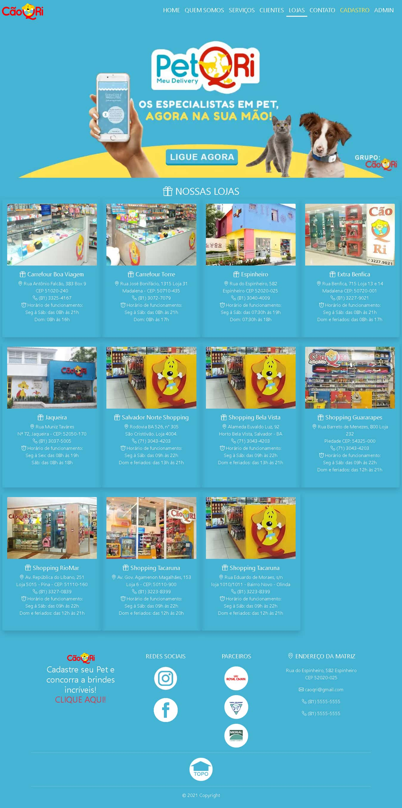
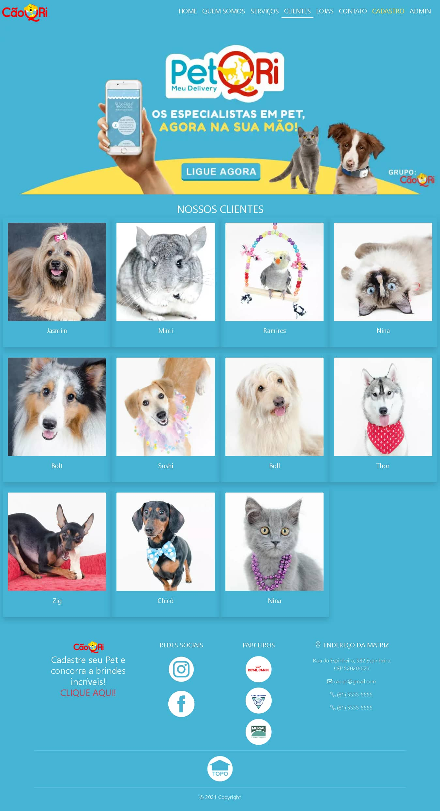
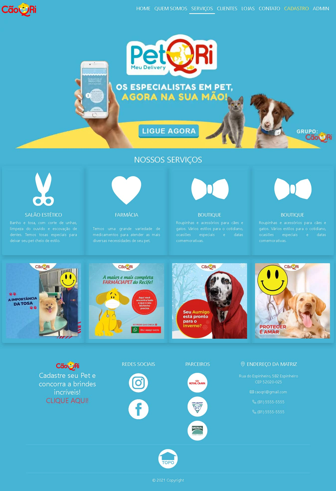

CãoQri - Site da empresa
O projeto do site CãoQri nasceu no quarto período da graduação. O contato com a empresa aconteceu durante um Programa de Extesão Tecnológica, o qual a empresa CãoQri participava como cliente.
Link do projeto no GitHub  